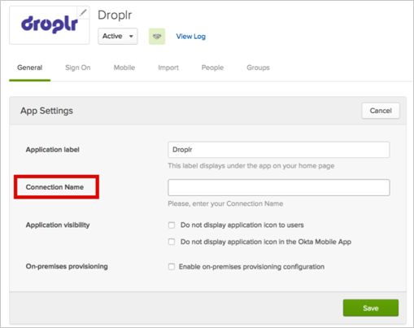

Contact the Droplr Support team and ask them to enable SAML for your account.
Provide them with the domain for your enterprise email account.
Droplr will send you back a Connection Name.
Provide Droplr with the following information:
Login URL/SignOn URL: Copy and paste the following:
Sign into the Okta Admin Dashboard to generate this variable.
IDP Issuer/Entity ID: Copy and paste the following:
Sign into the Okta Admin Dashboard to generate this variable.
x.509 Certificate: Copy and paste the following in PEM Text Format:
Sign into the Okta Admin Dashboard to generate this variable.
In Okta, select the General tab for the Droplr app, then click Edit.

Enter the Connection Name provided to you by Droplr.
Click Save.
Droplr will inform you when SAML has been set up.
Done!
Notes:
IdP-initiated flows, SP-initiated flows, and Just In Time (JIT) provisioning are all supported.